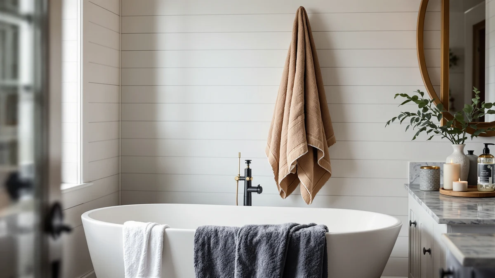

Aston & Arden Luxury Review (2026): Worth It?
Prices and picks verified as of October 2026. Independent, reader-supported reviews.


Quick Answer
This Aston & Arden Luxury review finds that the $42.99 Egyptian cotton towel is a solid pick if you want one full-size, 100% cotton towel and don't need a matching set. Buyers who wash towels for a whole household will likely get more value from one of the multi-piece alternatives below.
Our pick: Aston & Arden Luxury Egyptian at $42.99 Check Price on Amazon
Bottom line: our top pick is the Aston & Arden Luxury Egyptian Cotton Bath Towels at $42.99.
Things to Know Before You Buy
- Egyptian cotton with a long-staple weave tends to hold up better to repeated washing than standard cotton, which is the main reason towels like this one carry a premium over big-box basics.
- At $42.99 for a single 30 x 54 inch bath towel, the Aston & Arden Luxury Egyptian sits at the higher end of what most shoppers pay per towel, closer to hotel-quality lines than to everyday multi-packs.
- GSM (grams per square meter) is the figure that best predicts how thick and absorbent a towel feels, and heavier towels dry your body in fewer passes but also take longer to air dry themselves.
- Verified buyer reviews matter more than the star average alone, since most retailers won't let you touch the fabric before you buy. Watch for repeat complaints about shedding, thinning or fading.
- Alternatives priced within a couple of dollars of each other, like the sets covered later in this Aston & Arden Luxury review, often differ more in fiber type and towel count than in headline price.
This Aston & Arden Luxury review looks at whether the brand's 100% cotton bath towel earns its $42.99 price, or whether a similarly priced multi-piece set gets you further. Bath towels rarely get the scrutiny that bigger purchases do, but the fabric that touches your skin every day deserves more than a glance at the star rating.
Our take, after comparing material, sizing and verified owner feedback against three towels in the same price band: the Aston & Arden Luxury Egyptian towel is worth it if you want a single, straightforward 100% cotton towel and don't need a matching set right away. If you're outfitting a full bathroom or replacing towels for a household, the multi-piece alternatives further down this Aston & Arden Luxury review give you more pieces for close to the same money.
Why You Should Trust Us
Best Bath Towels is written and maintained by Ilane Tall, who researches bath textiles rather than reviewing them from a marketing brief. Every product referenced in this Aston & Arden Luxury review comes from the same product database we use across the site: current Amazon listings with verified pricing and material specifications, and owner review data where it's available. We do not run a fake testing lab, and we don't claim to have washed or dried any of these towels ourselves. Instead, we compare what's documented, check specs against manufacturer claims, and say so when a listing's language outruns its actual data. That distinction matters in a category where "luxury" and "premium" get stamped on almost everything, regardless of fiber quality or weight.
Our Research Experience
For this Aston & Arden Luxury review, our process is comparative and research-based. We pulled the current listing data for the Aston & Arden Luxury Egyptian towel, including its price, material description and stated size, and set it alongside three towels in the same price range. We researched verified owner reviews on Amazon for recurring themes such as absorbency complaints, shrinkage and color fading, then weighed those against the specs each brand publishes.
Where a listing's claims aren't backed by a published spec, such as a GSM figure that doesn't appear anywhere in the product data, we flag that gap instead of repeating marketing copy as fact. This approach won't catch every quirk a towel develops after fifty washes, but it does catch inflated claims and lets you compare products on the same criteria rather than trusting five different brands' adjectives.
Overview & Specs

Aston & Arden Luxury Egyptian
What we like
- 100% cotton construction, a fiber known for reliable absorbency without synthetic additives
- Standard 30 x 54 inch bath towel size that fits most towel bars and hooks
- Sold as a single towel, so you can try the brand before buying a full set
- Listing states material and size clearly, unlike vaguer "luxury" towel listings that skip specifics
Flaws but not dealbreakers
- At $42.99 for one towel, it costs more per piece than most multi-towel Egyptian cotton sets on this list
- The listing does not publish a GSM figure, so you can't directly compare its thickness to towels that do disclose weight
- No verified review count is available yet, which makes real-world durability harder to confirm before you buy
| Material | 100% cotton |
| Size | 30 x 54 in |
Aston & Arden positions this towel as a Luxury Egyptian pick, and the listing backs that up with the two specifics that matter most: 100% cotton fiber and a 30 x 54 inch size that matches the standard full bath towel most US households already use on their bars and hooks. Egyptian cotton's long fiber staple is what gives towels in this category their reputation for softness that holds up over repeated washing, compared with the shorter fibers used in cheaper cotton blends.
What the listing doesn't include is a published GSM figure, the gram-per-square-meter number that tells you how dense and absorbent a towel actually is before you buy it. That's a gap worth noting in an Aston & Arden Luxury review, since a competing towel that discloses its GSM gives you a more direct way to judge thickness. At $42.99, this towel is priced for a buyer who wants to sample the brand's Egyptian cotton quality on a single piece rather than commit to a full set upfront.
What We Liked
The strongest point in this Aston & Arden Luxury review is how clearly the listing states what you're buying: 100% cotton, one towel, 30 x 54 inches, $42.99. That sounds basic, but a lot of "luxury" towel listings lean on adjectives instead of specifics, and this one gives you the two facts, material and size, that actually predict how a towel performs and fits your bathroom.
Cotton's absorbency also makes it a safer default than synthetic blends if you or anyone in your household has sensitive skin, since it doesn't rely on the chemical finishes some microfiber towels use to boost softness. And because it's sold as a single towel rather than locked into a set, you can add exactly the number you need, whether that's replacing one worn-out towel or testing the brand before buying more.
What Could Be Better
The math is the main sticking point in this Aston & Arden Luxury review. At $42.99 per towel, buying enough for a household of four costs more than $170, while the Peryiter and SUPERIOR alternatives covered below charge the same $42.99 for a multi-piece set. Unless you specifically want to buy towels one at a time, that price gap is hard to ignore.
The listing also skips a published GSM figure, so you're left comparing this towel to competitors on fiber type alone rather than on a documented thickness number. And without a visible review count yet, there isn't a large pool of verified owner feedback to check against the brand's own description. That's not a reason to rule it out, but it does mean the shopper carries more of the risk than they would with a towel that has hundreds of reviews behind it.
Who Is It For?
This Aston & Arden Luxury review points toward one clear buyer: someone who wants a single, full-size 100% cotton towel and is comfortable paying a per-towel premium for that flexibility. If you're furnishing a guest bathroom one towel at a time, replacing a single worn-out piece, or want to try the brand's Egyptian cotton before buying more, the $42.99 price is easier to justify.
If you're stocking a shared bathroom, a rental, or a household that goes through towels quickly, you'll get more value from a multi-piece set at the same price point. The Peryiter and SUPERIOR options in the next section both bundle several towels for $42.99, which changes the math considerably if piece count matters more to you than buying from a single brand.
Alternatives to Consider
If the Aston & Arden Luxury Egyptian towel's single-piece price doesn't work for your household, these three towels sit in the same price range and each solve a different problem: more pieces per dollar, matching Egyptian cotton in a set, or a documented GSM figure at a slightly lower cost.

Editor's Pick
Peryiter 6 Pcs Mr and
Peryiter's 6-piece set matches the Aston & Arden Luxury Egyptian towel's $42.99 price but spreads it across six towels instead of one, so a household stocking a shared bathroom gets far more coverage per dollar. The tradeoff is that you're buying a full matching set upfront rather than a single towel to test the brand first.
$42.99
Check Price on Amazon
Best Value
Superior Heritage Egyptian Cotton Bath
SUPERIOR's Heritage Egyptian Cotton Bath towel shares the exact fiber type and $42.99 price of the Aston & Arden Luxury Egyptian towel, but it ships as a multi-piece set rather than one towel. If Egyptian cotton is the feature you care about most, this is the closest direct match on material, with more towels included for the same money.
$42.99
Check Price on Amazon
Premium Choice
POLYTE 430 GSM Microfiber Oversize
POLYTE's 430 GSM Microfiber Oversize towel undercuts the Aston & Arden Luxury Egyptian towel by a dollar and, unlike the cotton listing, actually publishes a GSM figure you can compare against other towels. Microfiber also dries faster between washes than cotton, though it won't feel the same against your skin if you're specifically after a cotton towel.
$41.89
Check Price on AmazonIs the Aston & Arden Luxury Egyptian towel worth $42.99 for a single towel?
It depends on what you need.
How does the Aston & Arden Luxury Egyptian towel compare to Egyptian cotton sets like the Superior Heritage line?
Both use Egyptian cotton, but the Superior Heritage Egyptian Cotton Bath towel ships as part of a multi-piece set at the same $42.99 price point, so you get more towels for the same money.
Frequently Asked Questions
Is the Aston & Arden Luxury Egyptian towel worth $42.99 for a single towel?
How does the Aston & Arden Luxury Egyptian towel compare to Egyptian cotton sets like the Superior Heritage line?
What size is the Aston & Arden Luxury Egyptian bath towel?
Final Verdict
This Aston & Arden Luxury review comes down to how you buy towels. Aston & Arden's Luxury Egyptian towel delivers 100% cotton in a standard 30 x 54 inch size, with a listing that states its material and dimensions clearly instead of leaning on vague luxury language. That makes it a reasonable pick for a single-towel purchase or a first try of the brand. If you need to stock a full bathroom or a busy household, though, the Peryiter and SUPERIOR sets above put more towels in your cart for the same $42.99, and POLYTE's microfiber option gives you a documented GSM figure this listing doesn't. Buy the Aston & Arden Luxury Egyptian towel one at a time, and buy one of the sets if you need more than that.